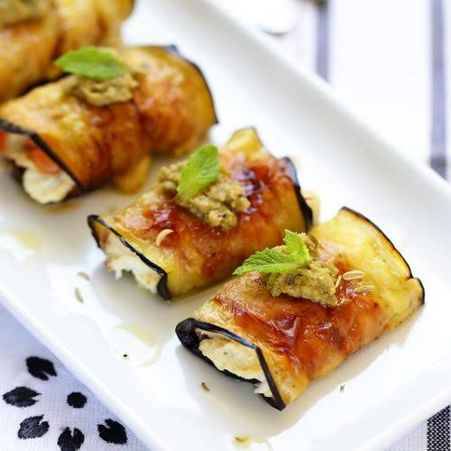

Aubergines roulées à la mozzarella
Ingrédients
2×
- 1 aubergine
- 1 boule de mozzarella
- 3 tranches de jambon blanc
- pesto
- 100 g de pulpe de tomates

Préparation
Étape 1
Peler 1 aubergine, la couper dans la longueur en 8 tranches de 0,5cm et les cuire à la vapeur.
Étape 2
Couper 1 boule de mozzarella en 8 bâtonnets.
Étape 3
Couvrir chaque tranche d’aubergine de 3 tranches de jambon blanc réparties, tartiner de pesto, poser un bâtonnet de mozzarella à une extrémité et rouler.
Étape 4
Ranger dans un plat, couvrir de 100 g de pulpe de tomates et cuire 10min à 250ºC.
Résumé
1 aubergine
couper cuire à la vapeur
1 boule de mozzarella
Couper
3 tranches de jambon blanc
pesto
rouler
100 g de pulpe de tomates
cuire 250ºC